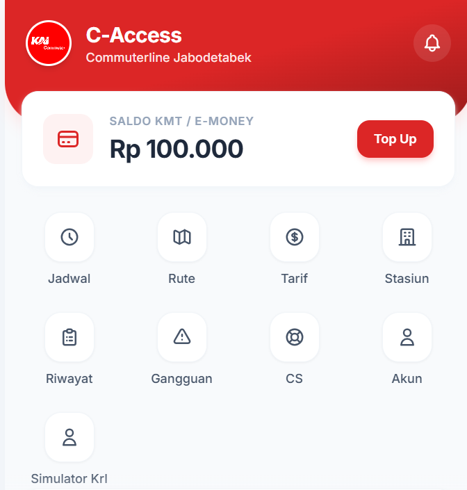

Koleksi Karya
Proyek Pilihan
 Web App
Web App
Website E-Commerce UMKM Laundry
Sistem pemesanan layanan laundry online terintegrasi dengan kalkulator berat, manajemen transaksi, dan database MySQL.
HTML, CSS, JS
 Aplikasi MOBILE
Aplikasi MOBILE
Aplikasi Mobile KIP Kuliah Tracker
Platform berbasis web untuk membantu memantau dan memverifikasi alur pencairan serta status pengajuan KIP Kuliah secara efisien.
HTML, CSS, JS, Node.js, React.js

Web UILanding Page KAI Commuter
Redesain antarmuka informasi layanan KRL Commuter Line Jabodetabek yang modern, cepat, dan responsif di berbagai perangkat.
HTML, Tailwind CSS, JS
 Website STT NF
Website STT NF
Landing page Elearning STT NF
informasi tentang Pembelajaran MataKuliah yang dengan tampilan lebih fresh, modern, cepat, dan responsif
HTML, Tailwind CSS, JS